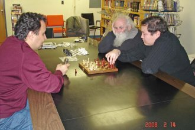

|
Шахматы |
| Разговоры о шахматах, вернее об уроках по обучению игры
в шахматы, а может и о создании шахматного клуба, начались еще в начале прошлого лета, а если
точнее, то в июне 2007 года. Инициатором выступил Самуил В., может быть потому что он сам страстный игрок в шахматы, пропагандист так называемых "системных" шахмат и инструктор по шахматам в христианской миссии. Поддерживал идею Юрий Л., руководитель детской шахматной школы "Рыцари шахмат". Брат Серик, к шахматам тоже неравнодушный, взялся быть в числе учредителей шахматной идеи в Northview Community Church. В связи с безвременной кончиной NCC идея повисла в воздухе. |
| Вдруг в нашем окружении появляется молодой и талантливый гроссмейстер Батор Самбуев и идея обретает конкретные очертания. |
|
Жаркие дебаты на первом организационном собрании шахматного
клуба велись уже не по самой идее, а по методам воплощения ее в жизнь. Разный опыт в этой сфере породил и разные предложения, но надо было начинать и для начала решили "протестировать" Батора и сели с ним сыграть партию. |
| Результат оказался легко предсказуем трезвому и здравомыслящему человеку! Впрочем, может быть играл и другой фактор - можно далее всем говорить: "А вот я сыграл партию шахмат с гроссмейстером!" |
| На мой наивный вопрос:"А можно ли вас обыграть?" Батор вежливо ответил: "Конечно, в принципе для вас это возможно", а Серик серьезно задумался. |
| На следущую нашу встречу Серик принес чудо-телефон с большим экраном и шахматной программой. |
|  |
| Мы немного посмеялись и турнир начался! Самуил начал живо все комментировать и предполагать на каком ходу гроссмейстер выиграет у бездушного телефона. Батор тоже шутил и через несколько ходов откровенно "зевнул". Он тут же спохватился, но правила неумолимы и лицо его сразу стало серьезным. "Зевок" был весьма значительным и исход стал неминуем, может быть была надежда на ничью, но мы попросили не тянуть время и объяснить ошибку. Батор все толково разъяснил, вернувшись на несколько шагов назад, и показал, как дальше надо было "правильно" играть. Конечно Батор выиграл у маленького, но мощного (как оказалось!) телефона, но нам всем был дан урок: НЕ
ПРЕВОЗНОСИТЕСЬ!
|